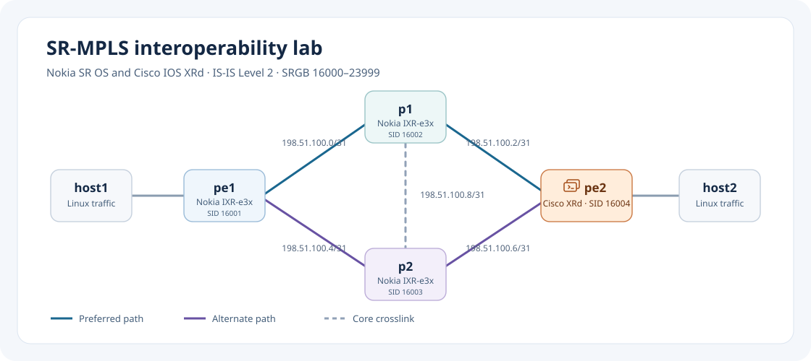

SR-MPLS interoperability lab
Nokia 7250 IXR-e3x (SR-SIM 26.10.R1) and Cisco IOS XRd 26.2.1, with repeatable Containerlab test scenarios.

Zoom into the topology, select a node for details, or switch to YAML to inspect the lab definition.
Nokia 7250 IXR-e3x (SR-SIM 26.10.R1) and Cisco IOS XRd 26.2.1, with repeatable Containerlab test scenarios.

Zoom into the topology, select a node for details, or switch to YAML to inspect the lab definition.